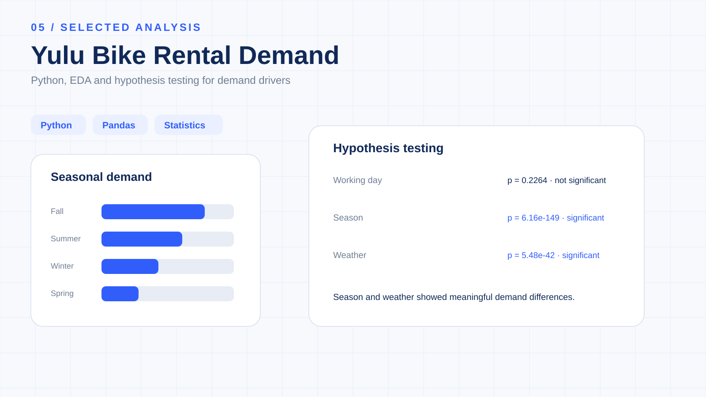

Yulu Bike Rental
Demand Analysis.
A business analytics and statistical hypothesis-testing case study examining how working days, seasons, weather and environmental conditions relate to shared electric-cycle rental demand.

Understand the factors associated with rental demand.
Yulu wants to understand the factors affecting demand for its shared electric cycles. The analysis asks which variables significantly affect demand and how well these variables explain differences in rental demand.
10,886 hourly observations across 2011–2012.
The dataset contains hourly rental observations with demand, calendar, weather and environmental variables.
Move from visual patterns to statistical evidence.
The project deliberately separates observed differences in the data from conclusions supported by hypothesis testing.
Univariate analysis
Examines demand distribution, season, weather, working days, temperature, humidity, windspeed and user types.
Bivariate analysis
Explores demand against season, weather, working day, temperature, humidity and windspeed to identify patterns worth testing.
Hypothesis formulation
Defines null and alternative hypotheses before selecting the statistical test.
Statistical decision
Uses test statistics and p-values to distinguish observed differences from statistically supported evidence.
What the statistical tests showed.
The project uses a two-sample t-test, ANOVA and Chi-square test to evaluate the stated business questions.
Operational planning needs more than a working-day flag.
The statistical results provide a structured basis for thinking about demand planning. In this analysis, seasonal and weather differences were statistically supported, while the working-day comparison was not.
Fleet availability
Demand patterns can support better allocation of available bikes across expected demand conditions.
Seasonal planning
Significant seasonal differences provide evidence for incorporating seasonality into capacity and operational planning.
Weather-aware operations
Weather-related demand differences can inform operational preparedness and planning.
Customer analysis
Separating casual and registered users provides additional context for understanding demand behaviour.
Demand forecasting
The analytical dataset provides a foundation for future predictive modelling.
Working-day interpretation
The non-significant test result suggests working-day status alone should not be treated as a statistically supported demand differentiator in this analysis.
Evidence before interpretation.
The project follows a repeatable statistical workflow rather than treating every visible chart difference as a business conclusion.
The emphasis is on translating statistical evidence into a meaningful business conclusion while keeping statistical significance separate from causation.
Python for analytical reasoning.
The project combines data manipulation, visualization and statistical testing in a notebook-based workflow.
Interpret the evidence in context.
Significance ≠ causation
Statistical significance does not automatically establish a causal relationship.
Multiple demand drivers
Rental demand is influenced by multiple factors simultaneously, so individual tests do not explain the full demand mechanism.
Historical dataset
The dataset represents a historical observation period and may not represent current Yulu demand.
Weather categories
Weather categories can hide variation within individual conditions.
Decision context
Operational decisions should combine statistical evidence with current operational, financial and market information.